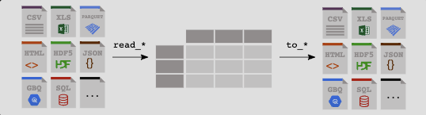

Code
# 导入pandas包
import pandas as pd
# 注意csv文件路径
df = pd.read_csv('./example_data/data.csv')
# 打印前五个
df.head()| Duration | Pulse | Maxpulse | Calories | |
|---|---|---|---|---|
| 0 | 60 | 110 | 130 | 409.1 |
| 1 | 60 | 117 | 145 | 479.0 |
| 2 | 60 | 103 | 135 | 340.0 |
| 3 | 45 | 109 | 175 | 282.4 |
| 4 | 45 | 117 | 148 | 406.0 |

获取数据data.csv下载地址，将csv文件下载到本地。
# 导入pandas包
import pandas as pd
# 注意csv文件路径
df = pd.read_csv('./example_data/data.csv')
# 打印前五个
df.head()| Duration | Pulse | Maxpulse | Calories | |
|---|---|---|---|---|
| 0 | 60 | 110 | 130 | 409.1 |
| 1 | 60 | 117 | 145 | 479.0 |
| 2 | 60 | 103 | 135 | 340.0 |
| 3 | 45 | 109 | 175 | 282.4 |
| 4 | 45 | 117 | 148 | 406.0 |
线上数据地址
df = pd.read_csv('https://www.w3schools.com/python/pandas/data.csv.txt')
# 打印前五个
df.head()| Duration | Pulse | Maxpulse | Calories | |
|---|---|---|---|---|
| 0 | 60 | 110 | 130 | 409.1 |
| 1 | 60 | 117 | 145 | 479.0 |
| 2 | 60 | 103 | 135 | 340.0 |
| 3 | 45 | 109 | 175 | 282.4 |
| 4 | 45 | 117 | 148 | 406.0 |
# 获取案例数据
import pandas as pd
df = pd.read_csv('https://raw.githubusercontent.com/pandas-dev/pandas/main/doc/data/titanic.csv')
df.head()| PassengerId | Survived | Pclass | Name | Sex | Age | SibSp | Parch | Ticket | Fare | Cabin | Embarked | |
|---|---|---|---|---|---|---|---|---|---|---|---|---|
| 0 | 1 | 0 | 3 | Braund, Mr. Owen Harris | male | 22.0 | 1 | 0 | A/5 21171 | 7.2500 | NaN | S |
| 1 | 2 | 1 | 1 | Cumings, Mrs. John Bradley (Florence Briggs Th... | female | 38.0 | 1 | 0 | PC 17599 | 71.2833 | C85 | C |
| 2 | 3 | 1 | 3 | Heikkinen, Miss. Laina | female | 26.0 | 0 | 0 | STON/O2. 3101282 | 7.9250 | NaN | S |
| 3 | 4 | 1 | 1 | Futrelle, Mrs. Jacques Heath (Lily May Peel) | female | 35.0 | 1 | 0 | 113803 | 53.1000 | C123 | S |
| 4 | 5 | 0 | 3 | Allen, Mr. William Henry | male | 35.0 | 0 | 0 | 373450 | 8.0500 | NaN | S |
在开始之前，确保已经安装了以下库：
Pandas：用于数据处理和操作。
SQLAlchemy：用于数据库连接和交互
可以使用以下命令通过pip安装它们：
pip install pandas sqlalchemy
首先，我们需要使用SQLAlchemy来建立与数据库的连接。根据使用的数据库类型（如MySQL、SQLite、PostgreSQL等），使用适当的连接字符串和数据库驱动程序。
以下是使用SQLite数据库的示例代码：
import sqlalchemy
# 建立与数据库的连接
engine = sqlalchemy.create_engine('sqlite:///path/to/database.db')将path/to/database.db替换为实际的数据库文件路径或连接字符串
有几种方法可以使用Pandas从数据库中导入数据。最简单的方法是使用read_sql()函数，该函数接受一个SQL查询语句并将结果读取为DataFrame对象。
以下是使用read_sql()函数导入数据的示例代码：
import pandas as pd
# 执行SQL查询并将结果读取为DataFrame
query = 'SELECT * FROM table_name'
df = pd.read_sql(query, engine)
# 打印DataFrame
print(df)将table_name替换为要查询的实际表名。
同样，使用Pandas可以将DataFrame中的数据导出到数据库中。可以使用to_sql()函数将DataFrame写入数据库表。
以下是使用to_sql()函数导出数据的示例代码
# 将DataFrame写入数据库表
df.to_sql('table_name', engine, if_exists='replace', index=False)将table_name替换为要写入的实际表名。if_exists=’replace’表示如果表已经存在，则替换它。index=False表示不将DataFrame的索引写入数据库。